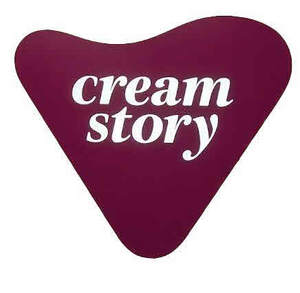

Trade Mark Journal No.2025/031 1 August 2025
UK00004238318 23 July 2025 (30,43)

- Class 30
- Dessert puddings; Dessert souffles; Rice-based pudding dessert; Chocolate desserts; Tiramisu; Ice cream desserts; Custards [baked desserts]; Cheesecake; Prepared desserts [pastries]; Prepared desserts [confectionery]; Fruit cake snacks; Chocolate cake; Prepared desserts [chocolate based]; Ice-cream cakes; Foodstuffs made of sugar for making a dessert; Rice cake snacks; Custard-based fillings for cakes and pies; Chocolate cakes; Candy cake; Macaroons [pastry]; Chocolate-based fillings for cakes and pies; Chocolate decorations for cakes; Chocolate fondue; Cheesecakes; Chocolate sweets; Chocolate pastries; Almond cake; Iced fruit cakes; Salad cream; Meal; Savoury pancakes; Cream cakes; Foodstuffs made of sugar for sweetening desserts; Chocolate drink preparations flavoured with banana; Candy cake decorations; Pies [sweet or savoury]; Chocolate confections; Fruit cakes; Coffee-based beverages containing ice cream (affogato); Ice cream cakes; Foodstuffs made of a sweetener for sweetening desserts; Strawberry gateaux; Chocolate for toppings; Chocolate brownies; Chocolate drink preparations flavoured with mocha; Chocolate drink preparations; Chocolate syrups for the preparation of chocolate based beverages; Chocolate drink preparations flavoured with toffee; Cake frosting; Chocolate topping; Chocolate beverages; Ice cream gateaux; Drinks prepared from chocolate; Drinks flavoured with chocolate; Chocolate-based meal replacement bars; Ice cream confections; Sugar-free sweets; Chocolate waffles; Deep chocolate cake made with chocolate sponge; Ice beverages with a chocolate base; Cupcakes; Cake decorations made of candy; Chocolate flavoured beverage making preparations; Chocolate for confectionery and bread; Chocolate mousses; Ice cream drinks; Chocolate drink preparations flavoured with mint; Sweets (Non-medicated -) in the nature of chocolate eclairs; Chocolate marzipan; Chocolate flavoured beverages; Chocolate-coated rice cakes; Chocolate sauce; Frozen yogurt cakes; Chocolate sauces; Flavourings of almond for food or beverages; Baklava; Ice cream with fruit; Fruit ice cream; Tarts [sweet or savoury]; Chocolate drink preparations flavoured with nuts; Iced cakes.
- Class 43
- Fast-food restaurant services; Hotel restaurant services; Take-out restaurant services; Bar and restaurant services; Restaurant and bar services; Take-away restaurant services; Carvery restaurant services; Restaurant services; Salad bars [restaurant services]; Restaurants; Carry-out restaurants; Self-service restaurant services; Mobile restaurant services; Reservation of restaurants; Booking of restaurant seats; Serving food and drink for guests in restaurants; Catering in fast-food cafeterias; Serving food and drink in restaurants and bars; Restaurants (Self-service -); Self-service restaurants; Restaurant services for the provision of fast food; Tourist restaurants; Restaurant services incorporating licensed bar facilities; Fast food restaurants; Bistro services; Delicatessens [restaurants]; Providing food and drink for guests in restaurants; Providing restaurant services; Restaurant information services; Eateries; Providing food and drink in restaurants and bars; Restaurant services provided by hotels; Food and drink catering; Catering of food and drink; Catering (Food and drink -); Cafe services; Takeaway food and drink services; Take-away food and drink services; Takeaway food services; Take-away food services; Providing food and drink in doughnut shops; Café services; Coffee bar services; Self-service cafeteria services.
Saranyan Krishnapillai